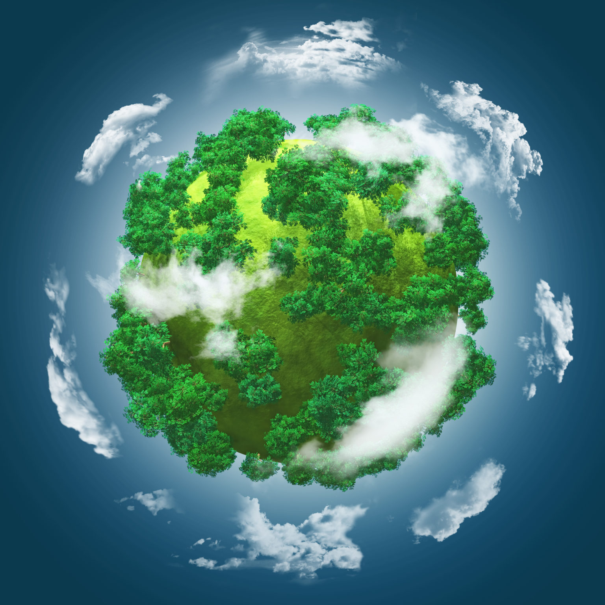
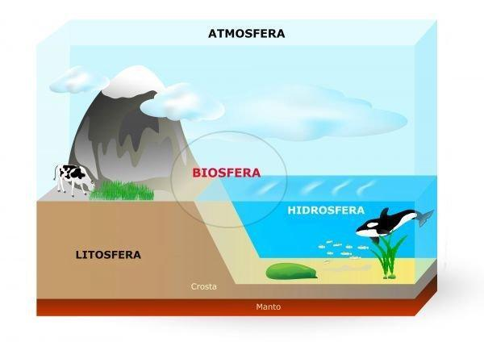

O QUE É BIOSFERA?
BIOSFERA é a camada da Terra que reúne todos os ecossistemas existentes. Ela corresponde ao local onde são encontrados os seres vivos.
CARACTERÍSTICA
A biosfera, com uma espessura estimada em até 19 km, é o ambiente onde os seres vivos podem sobreviver, abrangendo desde as profundezas dos oceanos até as altitudes mais elevadas. Esta camada, integrada à litosfera, hidrosfera e atmosfera, constitui a Terra habitada, conectando os ambientes terrestre, aéreo e aquático.
DIVISÃO DA BIOSFERA
Epinociclo: é a porção terrestre da biosfera. Formado pelos biomas terrestres como as florestas, savanas, campos e desertos, além dos seres vivos que habitam esses ambientes;
Talassociclo: é a porção aquática marinha da biosfera. É formado pelos oceanos e seres vivos que o habitam.
Limnociclo: é a porção constituída por água doce. É formado pelos rios, riachos, córregos e lagos, como pelos seres vivos encontrados nesses ambientes.
Todas as camadas estão relacionadas entre si:
-Litosfera: é a camada sólida, formada pelo solo e rochas;
-Hidrosfera: é a camada líquida, formada pelos rios, lagos e oceanos;
-Atmosfera: é a camada gasosa;
-Biosfera: é a camada habitada pelos seres vivos que integra os ambientes terrestre, aéreo e aquático.
MATERIAL PARA ESTUDO
Mapa Mental e Vídeo Aula com Prof. Ana Paula Apaso